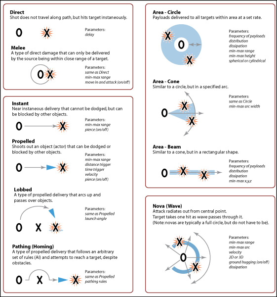
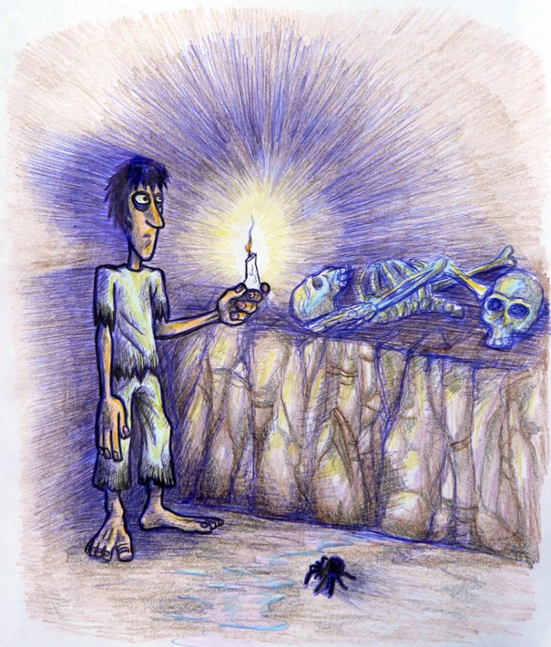
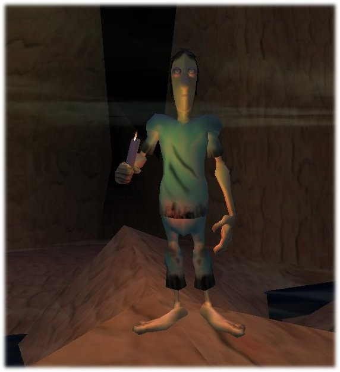
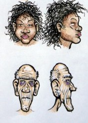
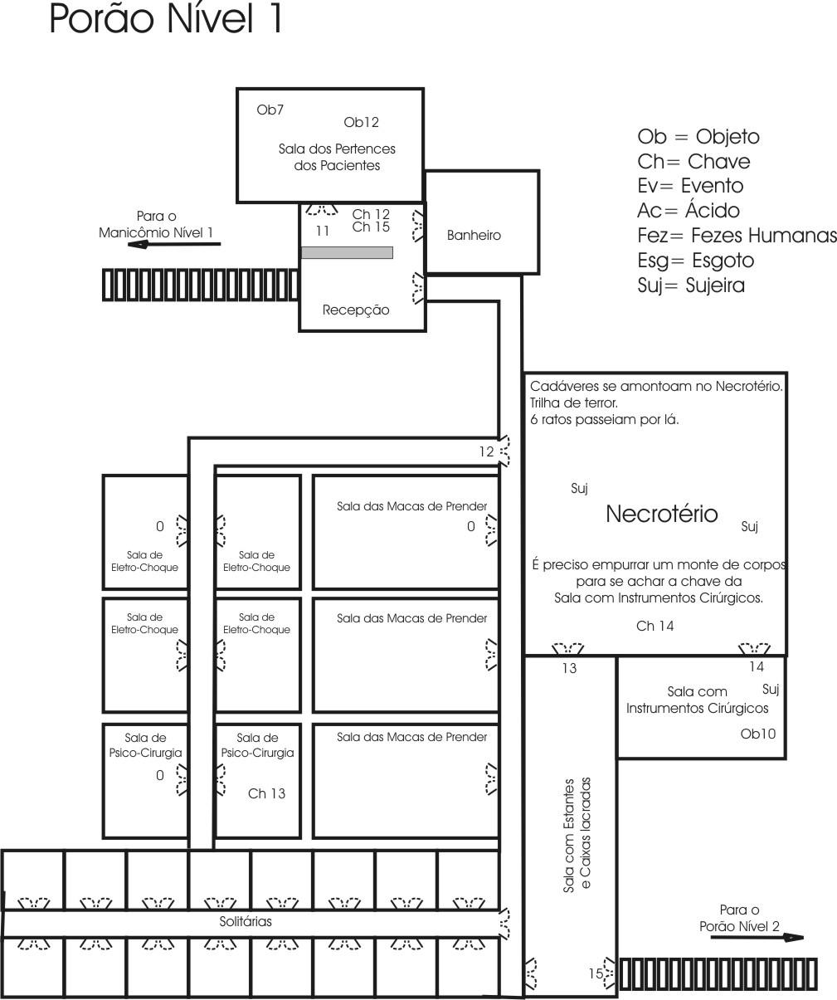

Criação e Desenvolvimento de Design e Arte para Jogos Digitais
 Jogos Digitais são os tradicionais vídeo-games de console, os jogos de computador e os de mobile
Jogos Digitais são os tradicionais vídeo-games de console, os jogos de computador e os de mobile
Todos os nossos softwares são profissionais mas de licença livre, ou seja, você não precisa comprá-los!
No curso vemos:
1-Game Design Document(GDD)e Gameplay para Jogos Digitais 
2-Criação e produção de Arte 2D e 3D para Jogos Digitais com Gimp e Blender 3D.
3-Prática com cada aluno criando seu próprio conteúdo de Jogo Digital!
5-Ao final analisamos todo o trabalho juntos!
Tempo de duração: 10 aulas de 4 horas cada uma totalizando 20 horas
Converse com o Estúdio TAO sobre os custos e as condições de realização, vamos até sua Escola ou Empresa
"O design de jogos é principalmente um processo artístico, mas também é um processo técnico. O designer do jogo persegue grandes objetivos artísticos, mesmo quando ele atravessa montanhas de código. Durante o processo de desenvolvimento do jogo, ele habita dois mundos muito diferentes, o mundo artístico e o mundo técnico. Como se administra a integração de mundos tão diferentes? Em resumo, como se faz o processo de projetar um jogo de computador?"
Cris Crawford, "The Art of Game Design", 1982.
Exemplos
"Concept Art" ganhador do Concurso Jogos BR 2006, da ABRAGAMES.

Jogo digital criado a partir do design anterior.

Personagem 3D modelado e texturado de design de personagens.
Esqueleto para personagem 3D.
"Concept Art"de personagem.

"Concept Art"de personagem.
"Gameplay Design" ganhador do Concurso Jogos BR 2006, da ABRAGAMES
Modelagem 3D de cenário em Blender.
"Trem de Doido", os investidores e apoiadores do jogo ganhador do Concurso Jogos BR 2006, da ABRAGAMES